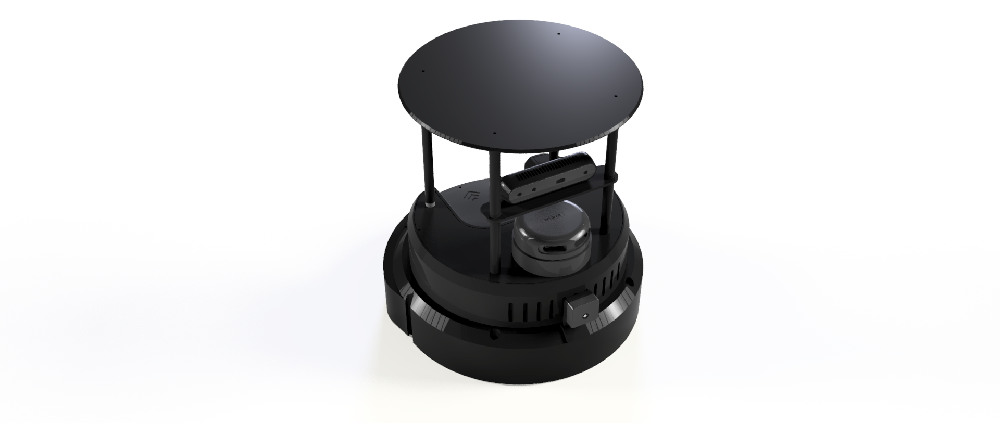

Introduction

Overview
Titan Robot is a ROS 2–based mobile robot platform designed for learning, experimentation, and real-world robotics development. Built with cost efficiency and modularity in mind, Titan Robot enables students, researchers, and developers to explore modern robotic concepts such as autonomous navigation, mapping, localization, and robot software architecture using ROS 2.
The platform combines reliable hardware with a flexible software stack, making it suitable for education, prototyping, and research applications. Titan Robot emphasizes hands-on learning by exposing users to both high-level autonomy and low-level motor control.
Design Goals
Titan Robot was designed with the following goals:
- Affordability – Accessible hardware without compromising core robotics capabilities
- Modularity – Easy to extend with additional sensors and peripherals
- ROS 2 Native – Built entirely around ROS 2 concepts and workflows
- Educational Focus – Clear architecture suitable for learning and teaching
- Real-World Readiness – Designed to operate reliably outside simulation
Key Capabilities
Titan Robot supports a wide range of robotics functionalities out of the box:
- Differential-drive mobile base
- Real-time motor control with encoder feedback
- 2D LIDAR-based mapping and obstacle detection
- Autonomous navigation using ROS 2 Navigation Stack
- Teleoperation via keyboard or joystick
- Visualization and debugging using RViz2
- Custom firmware and software development
Created By
Momentum Robotics is an Indian Robotics Startup.

Next Steps
To begin working with Titan Robot, proceed to:
- Getting Started – System requirements and setup
- Hardware Overview – Mechanical and electronic design
- Software Architecture – ROS 2 node and communication structure
Let’s get started 🚀